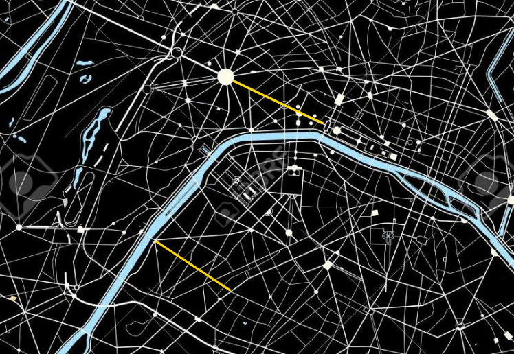
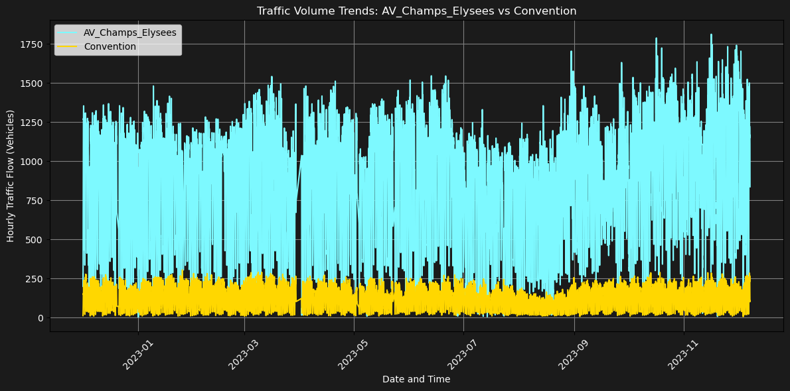
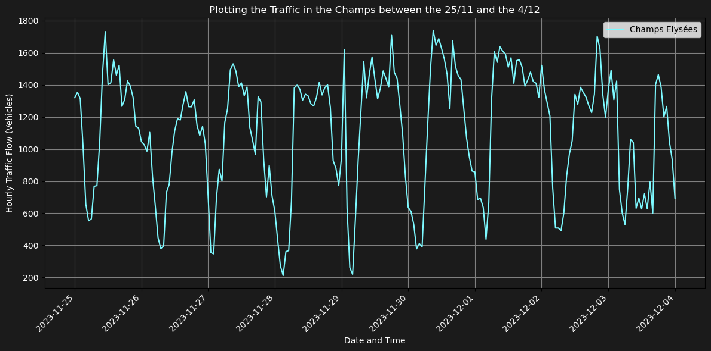
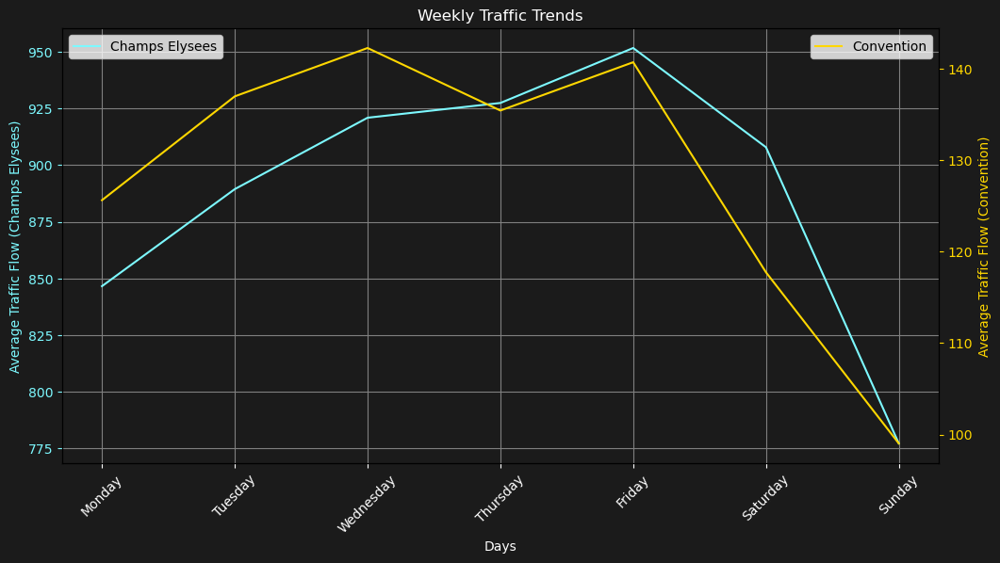
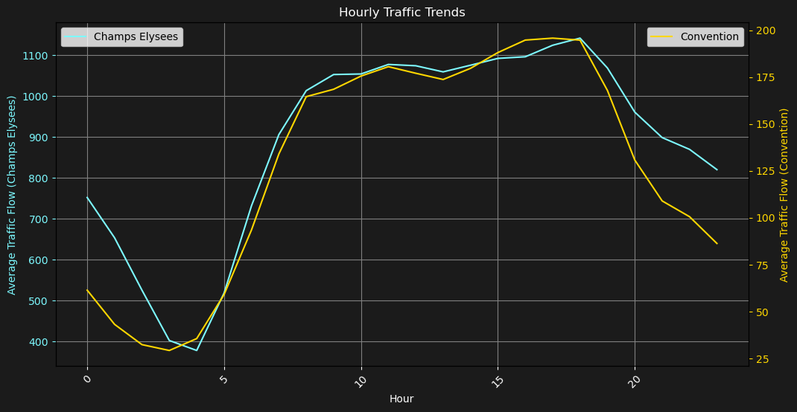
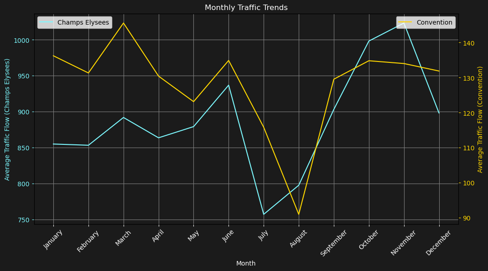
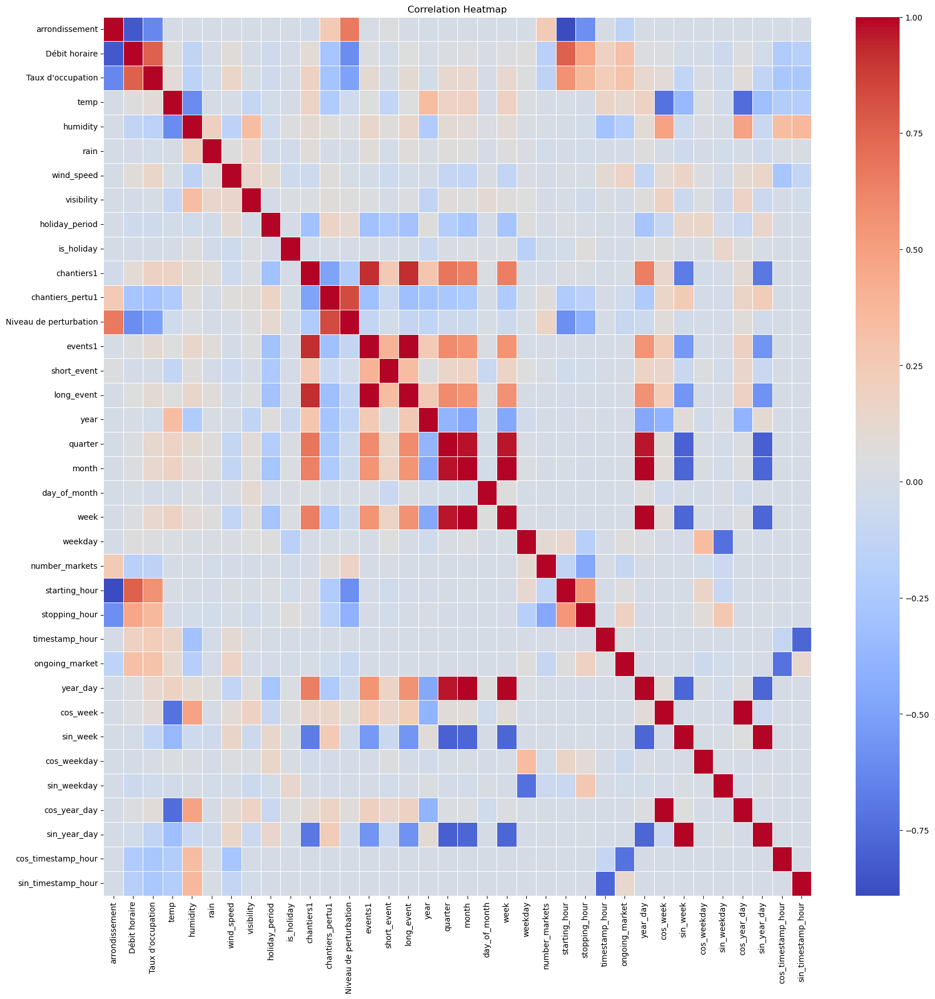
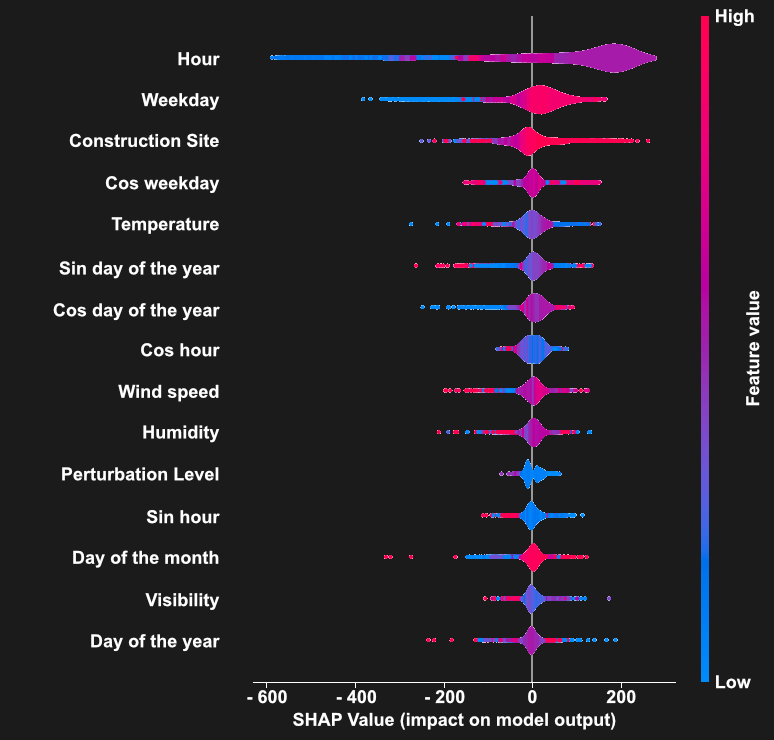
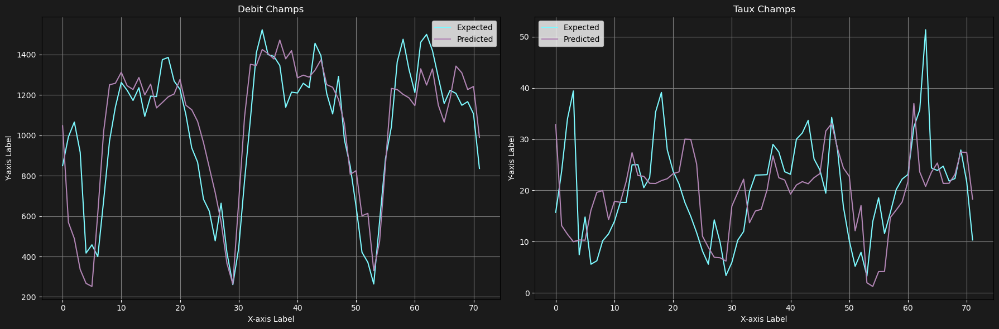
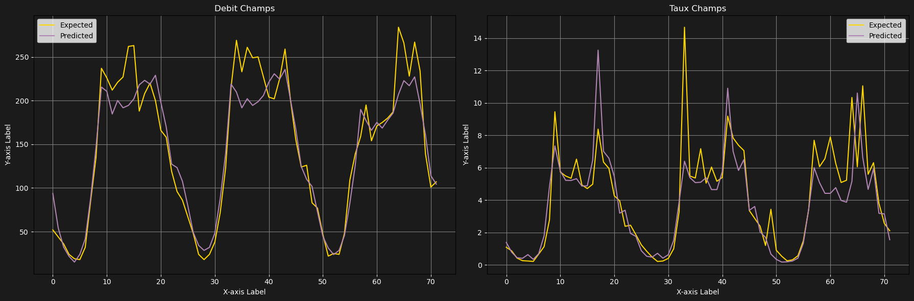

Traffic Forecasting
10/12/2023
Welcome to my Traffic Forecasting project! Here, I delve into the intricate patterns of traffic flow on three major Parisian roads: Champs-Elysées, Convention, and Saint-Pères. My journey through data analysis and predictive modeling aims to offer a new perspective on managing and understanding urban traffic.
View the full project on GitHub.
Context
In this section, I'll guide you through the background of this project. Why traffic forecasting in Paris? What makes these roads unique? Understanding the context sets the stage for appreciating the complexity and necessity of this endeavor.

Predicting traffic flow on Champs-Elysées and Convention, two of Paris' busiest roads, is more than a matter of convenience; it's a step towards smarter city living. By accurately forecasting traffic patterns, we can not only help commuters avoid frustrating jams but also contribute to reducing carbon emissions. Less time spent in traffic means less fuel burned, making a significant impact on our urban environment.
Here is a list of objectives I set myself for this project
- Develop a robust traffic prediction model.
- Analyze traffic patterns over time.
- Understand the impact of weather and events on traffic flow.
- Improve urban mobility planning.
Data Analysis
Data Analysis is the cornerstone of any data science project. This project is focused on obtaining a clearer understanding of Parisian traffic patterns through prediction and analysis. The aim is to identify the most favorable times for travel, effectively reducing the likelihood of encountering traffic congestion. Additionally, the project seeks to uncover and comprehend the various factors that influence these traffic trends.
First, lets plot our data to have a better understanding of the underlying trends

Traffic Volume Trends: Here, you can see the comparison of hourly traffic flow between the Champs Elysees and Convention over time, highlighting peak hours and quieter periods. The traffic in the Champs is more important than in Convention. This was expected as this road is very famous for tourist ansd one of the main axis for traveling in Paris.

Daily Traffic in the Champs Elysees: A closer look at the daily fluctuations in traffic within the Champs Elysees and Convention area, with detailed hourly data points. This plot highlights the daily patterns over a week in between the 25/11 and the 4/12.

Weekly Traffic Trends: Analysis of average traffic flow in the Champs Elysees compared to the Convention area, broken down by days of the week. This shows that the traffic is slowly increasing as we head into the end of the week. A possible interpretation could be that people use their car more during the end of the week as they might be more tired.

Hourly Traffic Trends: This graph illustrates the trends in traffic volume for both locations throughout the day, from early hours to late at night. You can clearly see that traffic reaches a minimum at 5am and its maximum at 6pm.

Monthly Traffic Trends: A monthly overview of traffic patterns, showing seasonal changes and monthly variations in traffic density. People use their car more often in the winter. This is certainly due to the cold temperatures. Furthermore, you can also see a peak in traffic in june. This might be due to the summer holidays where many people travel to Paris or away from Paris.
Data Processing
Now that we have analyzed our data we can start the pre-processing.
The data is relatively clean and contains no missing values. However, to improve the quality of our predictions, we can look for new external data sources that are correlated with traffic. Here are some examples of the different types of variables that we have added :
- Temperature, Humidity, Visibility, Wind Speed
- Special Events, Holidays
- Construction Sites, Riots
- Markets, Touristic zones
We can also plot the correlation map of our different variables to gain insights on their usefulness.

Correlation Heatmap: A heatmap representing the correlation between different variables such as weather conditions, time, and traffic flow.
Data Modelling
Data modelling is where the magic happens. In this section, I share the methodologies and algorithms used to predict traffic patterns. You'll get a glimpse of the coding and statistical analysis that power the forecasts
from sklearn.model_selection import GridSearchCV
def xgboost_forecasting_training(data, n_test, predictor):
train, test = data.iloc[:-n_test, :], data.iloc[-n_test:, :]
trainX, trainy = train.loc[:, ~train.columns.isin(['Débit horaire', "Taux d'occupation"])], train.loc[:, [predictor]]
testX, testy = test.loc[:, ~train.columns.isin(['Débit horaire', "Taux d'occupation"])], test.loc[:, [predictor]]
trainX = np.asarray(trainX)
trainy = np.asarray(trainy)
testX = np.asarray(testX)
testy = np.asarray(testy)
# Define the parameter grid to search
param_grid = {
'n_estimators': [100, 500, 1000],
'learning_rate': [0.01, 0.05, 0.1],
'max_depth': [3, 5, 7],
'colsample_bytree': [0.7, 0.8, 1.0],
'subsample': [0.7, 0.8, 1.0]
}
# Initialize the XGBRegressor
model = XGBRegressor(objective='reg:squarederror')
# Initialize the GridSearchCV
grid_search = GridSearchCV(estimator=model, param_grid=param_grid, cv=3, n_jobs=-1, scoring='neg_mean_squared_error')
# Fit the grid search to the data
grid_search.fit(trainX, trainy)
# Best model
best_model = grid_search.best_estimator_
# Predict using the best model
yhat = best_model.predict(testX)
# Calculate RMSE
error = mean_squared_error(testy, yhat)
rmse = np.sqrt(error)
return testy, yhat, rmse, best_model, grid_search.best_params_

Correlation Heatmap: A heatmap representing the correlation between different variables such as weather conditions, time, and traffic flow.

Predictive Model Results for Debit Champs: The expected versus predicted traffic flow in the Debit Champs area, showing the accuracy of the predictive model.

Predictive Analysis for Taux Champs: This plot compares the expected and predicted occupancy rates in the Taux Champs area.
Conclusion
We've reached the end of our traffic forecasting project, and the results speak for themselves. Our 'Debit Champs' graph shows that our model is on point with real-world traffic flow, matching closely with what was expected. This means our predictions are reliable and can be trusted for planning daily commutes.
However, the 'Taux Champs' graph reveals there's still room for improvement. While our predictions are good, they're not perfect. We see some discrepancies, which are valuable learning opportunities. They highlight the unpredictable elements of traffic that we'll aim to better understand in our next iteration. Moreover, you can see that predicting traffic for Champs is much harder than for convention.
In essence, this project has shown us the power of data in improving how we navigate and plan around city traffic. With further refinement, our goal is to make traffic predictions that can help reduce congestion and make our cities more efficient.